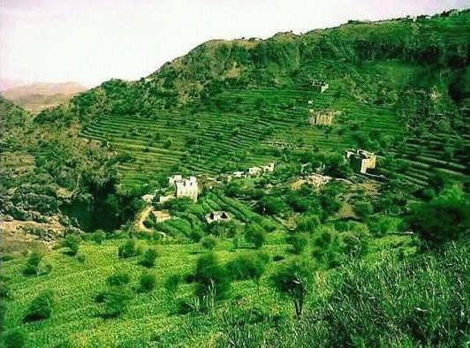
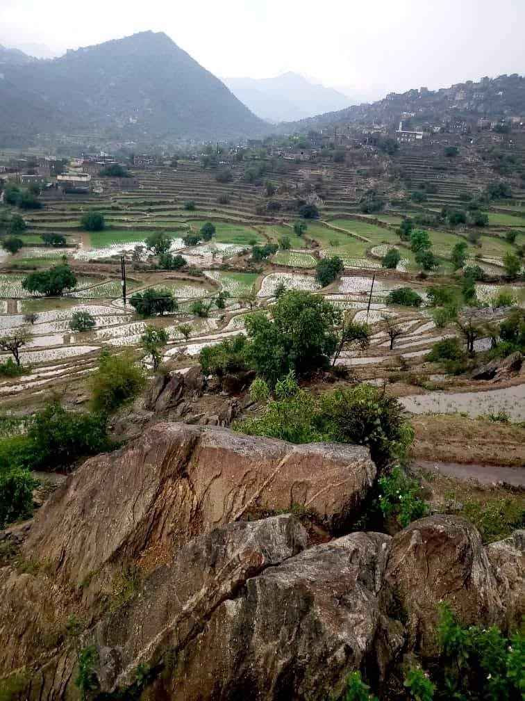
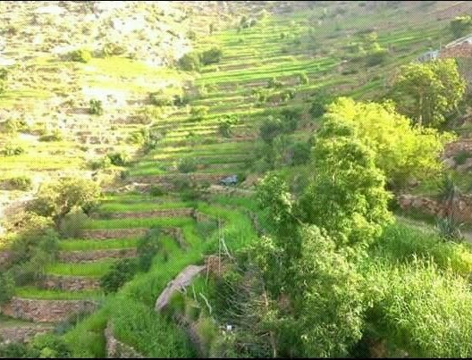
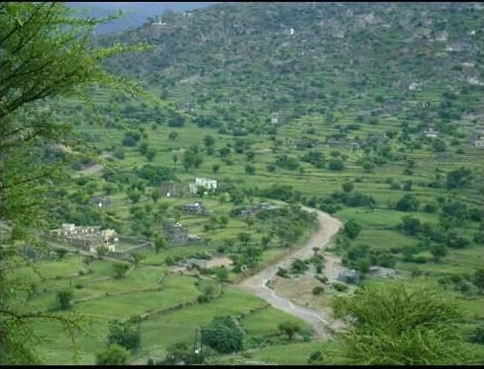

عن قرية المشاوز
اكتشف جمال قرية المشاوز وتعرف على تاريخها العريق
قرية المشاوز
قرية المشاوز هي إحدى قرى محافظة تعز، الجمهورية اليمنية. تتميز بطبيعتها الخلابة وموقعها الاستراتيجي بين الجبال، وتعتبر من القرى ذات التاريخ العريق في التكافل الاجتماعي والتعاون بين أبنائها. تأسس صندوق المشاوز التكافلي التنموي انطلاقاً من روح التعاون هذه، ليكون داعماً للتنمية المستدامة والرعاية الاجتماعية في القرية.

الموقع
تقع قرية المشاوز في مديرية ماوية، محافظة تعز، جنوب غرب اليمن. تبعد حوالي 30 كيلومتراً عن مركز المحافظة، وتحيط بها سلسلة جبلية جميلة، مما يجعلها وجهة زراعية وطبيعية مميزة.
التاريخ
تعود جذور قرية المشاوز إلى مئات السنين، حيث كانت محطة للتجارة والزراعة. اشتهرت بتعاون أبنائها في مواسم الحصاد ومواجهة الأزمات، وهو ما انعكس لاحقاً في تأسيس صندوق المشاوز كامتداد طبيعي لهذه الروح التكافلية الأصيلة.


